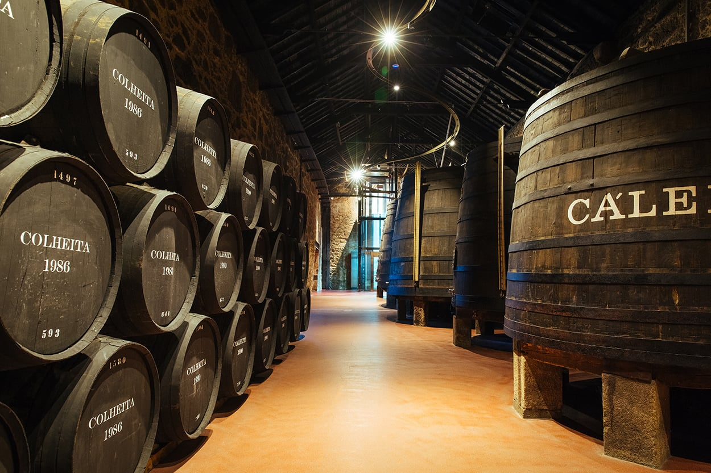
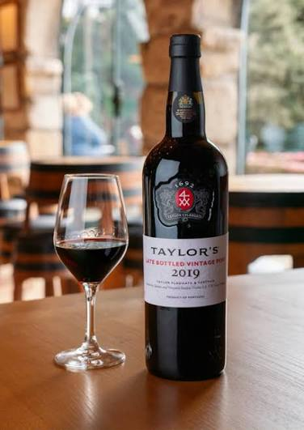
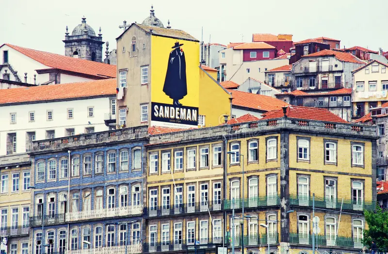

Porto Wine Cellars & Tastings
Explore centuries-old wine cellars along the Douro River in Vila Nova de Gaia and sample world-famous Port wines.

Top Wine TourCálem Cellars
One of the most visited Port wine cellars, featuring interactive museum exhibits, live fado shows, and guided wine tastings right next to Dom Luís I Bridge.
- Av. de Diogo Leite 344, Vila Nova de Gaia
- €14 – €20 (Guided tour & tasting)

Historic & ScenicTaylor’s Port Cellars
Famous 430-year-old Port house set on a scenic hilltop, offering self-guided audio tours, peacocks in the garden, and premium vintage tastings.
- Rua do Choupelo 250, Vila Nova de Gaia
- €20 (Audio tour + 2 Port tastings)

Iconic BrandSandeman Cellars
Housed in a 1790 granite building overlooking the river, famous for its cape-clad "Don" mascot and atmospheric barrel-aging rooms.
- Largo Miguel Bombarda 3, Vila Nova de Gaia
- €15 – €22 (Tour & tasting)
Erasmus Local Tip
Walk across the lower deck of the Dom Luís I Bridge to Vila Nova de Gaia! You don't need to spend big on private tours — many cellars offer student discounts at the door, or you can order a cheap glass of refreshing Porto Tónico (White Port & Tonic) at riverside outdoor terraces during sunset.